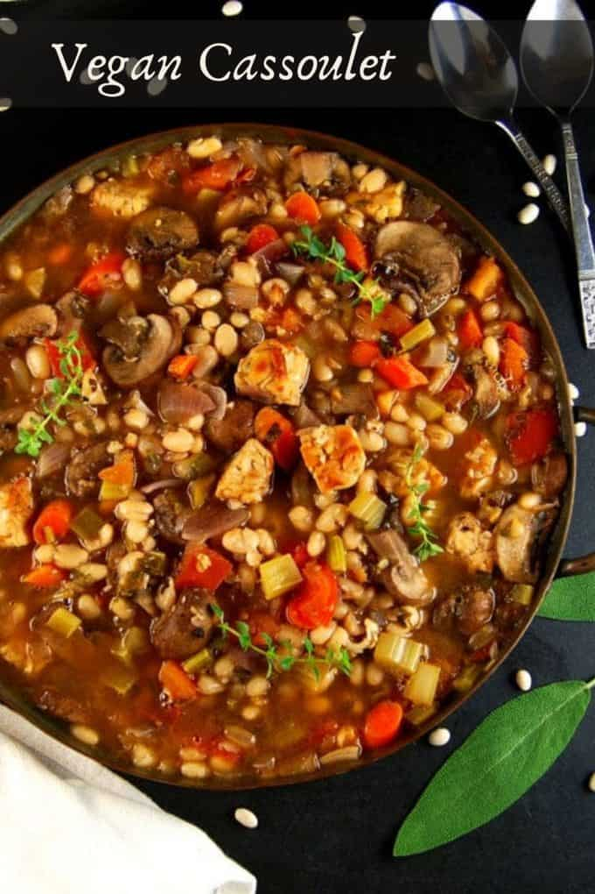

Vegan Cassoulet

Description
This is a pretty free interpretation of a classic french stew. Since we privately keep calling it "cassoulet" we will go by that name in the recipe.
to properly make this dish you'll need a big ovenproof pan. You can theoretically cook the stew with more heat and shorter duration,
but the longer it cooks the better it tastes.
Ingredients
- 300g of hot vegan sausage (chorizo or salsiccia-style)
- 2 cans white beans
- 2 bell peppers
- 1 stick of leek
- 3 medium-sized carots
- 2 cans tomato
- 2 onions
- 4 cloves garlic
- 4 tbsp olive oil
- Paprika powder
- Rosemary
- Salt
- Pepper
Steps
- Cut Bell-peppers, leek, carots and saucages into bite sized pieces
- Chop onions and garlic
- pour away the water of the white beans
- Put everything into an ovenproof pan
- stir properly
- put the pan in the oven
- heat the oven to 120-140 °C (you can pre-heat but there is no need)
- cook for about 3 hours (stir again every hour or when the top part of your stew becomes brown)